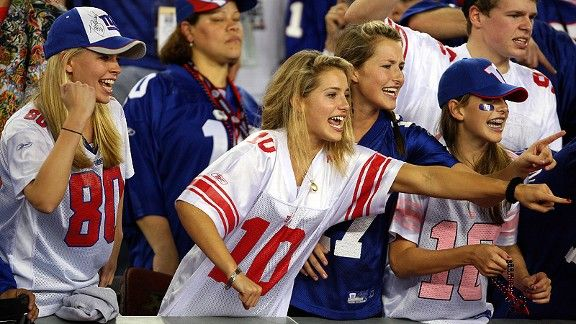

Conclusion
Overview
The survey data explores different perspectives of sports conversation. As sports is often considered a central part of American culture and daily conversation, analyzing these dynamics through the lens of gender uncovers some interesting realities that are important to acknowledge. Most of the respondents identify as sports fans and engage with sports regularly, particularly through professional and collegiate football and basketball. However, while sports interest is widespread, participation in athletic programs is relatively low, meaning most engagement occurs through fandom rather than direct involvement in sports organizations.
Across responses, sports fandom is strongly associated with passion, loyalty, and consistent knowledge of teams and games. However, the data also suggests that "real" sports fandom is often judged through socially constructed expectations of knowledge and authenticity, which can influence how individuals are perceived when participating in sports conversations.


Full Reflection
The findings highlight that gender plays a subtle but consistent role in shaping experiences within sports spaces. While both men and women generally reported positive reactions when identifying as sports fans, female respondents more frequently described experiences of being questioned, doubted, or assumed to have external motivations for their interest in sports.
These patterns were most visible in social environments, such as friend gatherings, stadiums, and sports bars, where sports conversation is informal but socially performative. In these settings, women were more likely to report feeling the need to prove their knowledge or encountering assumptions about their legitimacy as fans.
Male respondents, in contrast, overwhelmingly reported feeling welcomed and rarely experiencing challenges to their credibility as sports fans. This contrast suggests that sports identity is often more readily validated in men, while women's participation is more likely to be evaluated or scrutinized.
Perception-based responses further reinforce this dynamic. While both men and women were generally viewed positively when identifying as sports fans, assumptions about men were more consistently tied to genuine interest and expertise. Women, however, were more variably interpreted, with some respondents suggesting they may follow sports casually or for social reasons. These subtle differences reveal how gender can influence baseline assumptions about credibility in sports knowledge.
At the same time, female respondents reported more emotional and behavioral impacts from these dynamics, including pressure to over-prepare, increased defensiveness, and avoidance of certain sports spaces. These responses suggest that even low-level skepticism can influence how comfortably women engage in sports discourse.
Key Overall Insights
The results of this research suggest that sports culture is broadly inclusive in participation but not always equal in perception. While interest in sports is high across genders, the credibility of that interest is not always evaluated equally.
Three key insights emerge:
1. Sports fandom is widely shared, but unevenly validated. Both men and women engage in sports, but men's fandom is more consistently assumed to be authentic without question.
2. Gender influences conversational confidence in subtle but meaningful ways. Women are more likely to experience doubt or feel the need to justify their knowledge, which can impact how freely they participate in sports conversations.
3. Social environments amplify these dynamics. Informal spaces such as friend groups, stadiums, and sports bars are where gendered assumptions about sports knowledge are most likely to surface.
Overall, the findings support the idea that while sports are a shared cultural space, access to confidence and credibility within that space is still shaped by gendered expectations. Addressing these subtle barriers is essential to ensuring that sports conversations reflect the full range of voices participating in them.